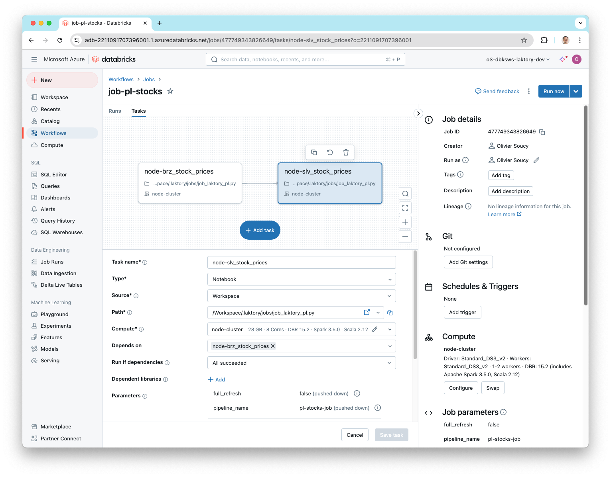
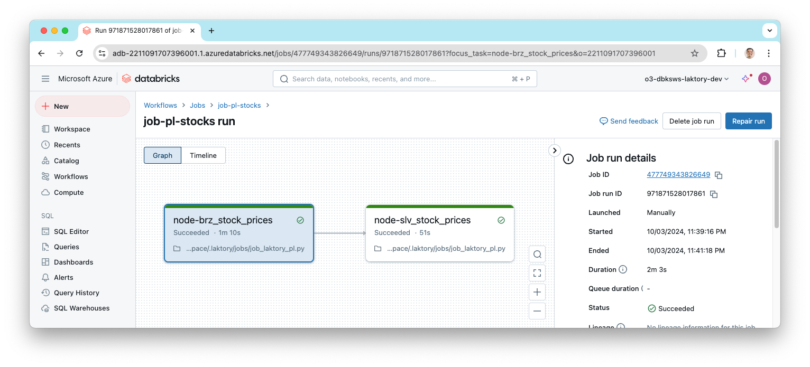

Workflows
The workflows stack sets up and deploys three key components: a "Hello World!" Databricks job, a Laktory pipeline for
stock prices (as a Databricks Job and as a Delta Live Table), and all the necessary supporting resources.
Create Stack
To create the stack, use the following command:
laktory quickstart -t workflows
Files
After running the quickstart command, the following structure is created:
.
data
stock_prices.json
notebooks
dlt
dlt_laktory_pl.py
jobs
job_hello.py
job_laktory_pl.py
read_env.sh
requirements.txt
resources
dbfsfiles.yaml
job-hello.yaml
notebooks.yaml
pl-stocks-dlt.yaml
pl-stocks-job.yaml
scripts
debug_pl.py
sql
slv_stock_prices.sql
stack.yaml
Resources Directory
The files in the resources directory are referenced in the stack.yaml file and declare various resources to be
deployed. Each file specifies one or more resources.
Notebooks Directory
The notebooks directory contains the notebooks to be deployed to the Databricks workspace, as defined in the
resources/notebooks.yaml file. These notebooks are also referenced in job and pipeline definitions.
Data Directory
For the pipeline to run, a sample stock_prices.json data file is provided and will be uploaded to DBFS as declared in
resources/dbfsfiles.yaml.
Scripts Directory
The debug_pl.py script can be used to locally (from your IDE) develop, debug and execute the pl-stocks-job pipeline.
Set Environment Variables
Before deployment, ensure the following environment variables are properly set, as referenced in the stack.yaml file:
DATABRICKS_HOST: The URL of your Databricks workspaceDATABRICKS_TOKEN: A valid Databricks personal access token
Deploy Stack
Now you are ready to deploy your stack. If you're using Terraform, start by initializing the environment:
laktory init --env dev
Then, deploy the stack:
laktory deploy --env dev
The deployment process will refresh the state of your Databricks resources and generate an execution plan using Terraform. Once the plan is generated, simply confirm by typing "yes" to proceed.
(laktory) osoucy@countach workflows % laktory deploy --env dev
databricks_dbfs_file.dbfs-file-stock-prices: Refreshing state... [id=/Workspace/.laktory/data/stock_prices/stock_prices.json]
databricks_notebook.notebook-job-laktory-pl: Refreshing state... [id=/.laktory/jobs/job_laktory_pl.py]
databricks_workspace_file.workspace-file-laktory-pipelines-pl-stocks-spark-dlt-json: Refreshing state... [id=/.laktory/pipelines/pl-stocks-spark-dlt.json]
databricks_workspace_file.workspace-file-laktory-pipelines-pl-stocks-sql-json: Refreshing state... [id=/.laktory/pipelines/pl-stocks-sql.json]
databricks_notebook.notebook-dlt-laktory-pl: Refreshing state... [id=/.laktory/dlt/dlt_laktory_pl.py]
databricks_notebook.notebook-job-hello: Refreshing state... [id=/.laktory/jobs/job_hello.py]
databricks_pipeline.pl-stocks-spark-dlt: Refreshing state... [id=dc28dbfb-0407-42fa-979f-94e17fa1fd30]
databricks_job.job-hello: Refreshing state... [id=808120666287598]
databricks_job.pipeline-databricks-job-job-pl-stock-sql: Refreshing state... [id=210130692451027]
databricks_permissions.permissions-job-hello: Refreshing state... [id=/jobs/808120666287598]
databricks_permissions.permissions-workspace-file-laktory-pipelines-pl-stocks-spark-dlt-json: Refreshing state... [id=/files/4435054900343469]
databricks_permissions.permissions-workspace-file-laktory-pipelines-pl-stocks-sql-json: Refreshing state... [id=/files/4435054900343468]
Note: Objects have changed outside of Terraform
Terraform used the selected providers to generate the following execution plan. Resource actions are indicated with the following symbols:
+ create
-/+ destroy and then create replacement
Terraform will perform the following actions:
# databricks_dbfs_file.dbfs-file-stock-prices will be created
+ resource "databricks_dbfs_file" "dbfs-file-stock-prices" {
+ dbfs_path = (known after apply)
+ file_size = (known after apply)
+ id = (known after apply)
+ md5 = "different"
+ path = "/Workspace/.laktory/data/stock_prices/stock_prices.json"
+ source = "./data/stock_prices.json"
}
[...]
Plan: 12 to add, 0 to change, 1 to destroy.
Do you want to perform these actions?
Terraform will perform the actions described above.
Only 'yes' will be accepted to approve.
Enter a value: yes
After deployment, you can check the Databricks workspace to confirm that the pipeline job has been successfully deployed.

When a Laktory pipeline is deployed as a job, you don't have to manually create each task, they are automatically created based on the nodes defined in your pipeline.
Develop Pipeline Job
With Laktory, you have the ability to prototype, test and debug your pipeline
directly from your IDE. Open the scripts/debug_pl.py script, add your cluster
ID and execute the script. A remote Spark session will be passed up execution
and you will be able to preview and explore the resulting DataFrames.
runfile('debug_pl.py', wdir='./')
resource_name_='pl-stocks-job' options=ResourceOptions(variables={}, depends_on=[], provider=None, ignore_changes=None, aliases=None, delete_before_replace=True, import_=None, parent=None, replace_on_changes=None) lookup_existing=None variables={} databricks_job=PipelineDatabricksJob(resource_name_=None, options=ResourceOptions(variables={}, depends_on=[], provider=None, ignore_changes=None, aliases=None, delete_before_replace=True, import_=None, parent=None, replace_on_changes=None), lookup_existing=None, variables={}, access_controls=[], clusters=[], continuous=None, control_run_state=None, email_notifications=None, format=None, health=None, max_concurrent_runs=None, max_retries=None, min_retry_interval_millis=None, name='job-pl-stock-sql', notification_settings=None, parameters=[JobParameter(variables={}, default='pl-stocks-sql', name='pipeline_name'), JobParameter(variables={}, default='false', name='full_refresh')], retry_on_timeout=None, run_as=None, schedule=None, tags={}, tasks=[JobTask(variables={}, condition_task=None, depends_ons=[], description=None, email_notifications=None, existing_cluster_id=None, health=None, job_cluster_key=None, libraries=None, max_retries=None, min_retry_interval_millis=None, notebook_task=JobTaskNotebookTask(variables={}, notebook_path='/.laktory/jobs/job_laktory_pl.py', base_parameters={'node_name': 'brz_stock_prices_sql'}, source=None), notification_settings=None, pipeline_task=None, retry_on_timeout=None, run_if=None, run_job_task=None, sql_task=None, task_key='node-brz_stock_prices_sql', timeout_seconds=None), JobTask(variables={}, condition_task=None, depends_ons=[JobTaskDependsOn(variables={}, task_key='node-brz_stock_prices_sql', outcome=None)], description=None, email_notifications=None, existing_cluster_id=None, health=None, job_cluster_key=None, libraries=None, max_retries=None, min_retry_interval_millis=None, notebook_task=JobTaskNotebookTask(variables={}, notebook_path='/.laktory/jobs/job_laktory_pl.py', base_parameters={'node_name': 'slv_stock_prices_sql'}, source=None), notification_settings=None, pipeline_task=None, retry_on_timeout=None, run_if=None, run_job_task=None, sql_task=None, task_key='node-slv_stock_prices_sql', timeout_seconds=None)], timeout_seconds=None, trigger=None, webhook_notifications=None, laktory_version=None, notebook_path=None) dataframe_backend='SPARK' dlt=None name='pl-stocks-sql' nodes=[PipelineNode(variables={}, add_layer_columns=True, dlt_template='DEFAULT', dataframe_backend='SPARK', description=None, drop_duplicates=None, drop_source_columns=None, transformer=None, expectations=[], layer=None, name='brz_stock_prices_sql', primary_key=None, sink=TableDataSink(variables={}, mode='OVERWRITE', write_options={}, catalog_name=None, checkpoint_location=None, format='DELTA', schema_name=None, table_name='brz_stock_prices_sql', warehouse='DATABRICKS'), source=FileDataSource(variables={}, as_stream=False, broadcast=False, cdc=None, dataframe_backend='SPARK', drops=None, filter=None, limit=None, mock_df=None, renames=None, sample=None, selects=None, watermark=None, format='JSON', header=True, multiline=False, path='dbfs:/Workspace/.laktory/data/stock_prices/', read_options={}, schema_location=None), timestamp_key=None), PipelineNode(variables={}, add_layer_columns=True, dlt_template='DEFAULT', dataframe_backend='SPARK', description=None, drop_duplicates=None, drop_source_columns=None, transformer=SparkChain(variables={}, dataframe_backend='SPARK', nodes=[SparkChainNode(variables={}, dataframe_backend='SPARK', func_args=[], func_kwargs={}, func_name=None, sql_expr='SELECT\n cast(data.created_at AS TIMESTAMP) AS created_at,\n data.symbol AS symbol,\n data.open AS open,\n data.close AS close\nFROM\n {df}\n', with_column=None, with_columns=[]), SparkChainNode(variables={}, dataframe_backend='SPARK', func_args=[], func_kwargs={'subset': ['created_at', 'symbol']}, func_name='drop_duplicates', sql_expr=None, with_column=None, with_columns=[])]), expectations=[], layer=None, name='slv_stock_prices_sql', primary_key=None, sink=TableDataSink(variables={}, mode='OVERWRITE', write_options={}, catalog_name=None, checkpoint_location=None, format='DELTA', schema_name=None, table_name='slv_stock_prices_sql', warehouse='DATABRICKS'), source=PipelineNodeDataSource(variables={}, as_stream=False, broadcast=False, cdc=None, dataframe_backend='SPARK', drops=None, filter=None, limit=None, mock_df=None, renames=None, sample=None, selects=None, watermark=None, node_name='brz_stock_prices_sql', node=PipelineNode(variables={}, add_layer_columns=True, dlt_template='DEFAULT', dataframe_backend='SPARK', description=None, drop_duplicates=None, drop_source_columns=None, transformer=None, expectations=[], layer=None, name='brz_stock_prices_sql', primary_key=None, sink=TableDataSink(variables={}, mode='OVERWRITE', write_options={}, catalog_name=None, checkpoint_location=None, format='DELTA', schema_name=None, table_name='brz_stock_prices_sql', warehouse='DATABRICKS'), source=FileDataSource(variables={}, as_stream=False, broadcast=False, cdc=None, dataframe_backend='SPARK', drops=None, filter=None, limit=None, mock_df=None, renames=None, sample=None, selects=None, watermark=None, format='JSON', header=True, multiline=False, path='dbfs:/Workspace/.laktory/data/stock_prices/', read_options={}, schema_location=None), timestamp_key=None)), timestamp_key=None)] orchestrator='DATABRICKS_JOB' udfs=[] workspacefile=None
laktory.models.pipeline - INFO - Executing Pipeline
laktory.models.pipelinenode - INFO - Executing pipeline node brz_stock_prices (None)
laktory.models.datasources.filedatasource - INFO - Reading dbfs:/Workspace/.laktory/data/stock_prices/ as static
laktory.models.pipelinenode - INFO - Executing pipeline node slv_stock_prices (None)
laktory.models.datasources.pipelinenodedatasource - INFO - Reading pipeline node brz_stock_prices from output DataFrame
laktory.models.transformers.basechain - INFO - Executing SPARK chain
laktory.models.transformers.basechain - INFO - Executing SPARK chain node 0 (SparkChainNode).
laktory.models.transformers.sparkchainnode - INFO - DataFrame df as
SELECT
cast(data.created_at AS TIMESTAMP) AS created_at,
data.symbol AS symbol,
data.open AS open,
data.close AS close
FROM
{df}
laktory.models.transformers.basechain - INFO - Executing SPARK chain node 1 (SparkChainNode).
laktory.models.transformers.sparkchainnode - INFO - DataFrame df as drop_duplicates(subset=['created_at', 'symbol'])
+-------------------+------+------------------+------------------+
|created_at |symbol|open |close |
+-------------------+------+------------------+------------------+
|2024-03-05 18:30:00|AAPL |170.4600067138672 |170.04400634765625|
|2024-03-05 17:30:00|AMZN |174.6999969482422 |173.8701934814453 |
|2024-03-05 16:30:00|AAPL |170.4149932861328 |170.78500366210938|
|2024-03-05 15:30:00|AAPL |169.9199981689453 |170.4199981689453 |
|2024-03-05 19:30:00|AMZN |173.91000366210938|173.39500427246094|
|2024-03-05 14:30:00|MSFT |413.0 |405.25 |
|2024-03-05 16:30:00|GOOGL |131.52999877929688|133.0850067138672 |
|2024-03-05 17:30:00|AAPL |170.78500366210938|170.47000122070312|
|2024-03-05 18:30:00|GOOGL |132.7449951171875 |132.32000732421875|
|2024-03-05 19:30:00|GOOGL |132.3249969482422 |132.04010009765625|
+-------------------+------+------------------+------------------+
only showing top 10 rows
Run Pipeline Job
You can now run your pipeline either from the Databricks UI or using the Laktory CLI:
laktory run --env dev --job pl-stock-job
(laktory) osoucy@countach workflows % laktory run --env dev --job job-pl-stocks
INFO - Getting id for job job-pl-stocks
INFO - Getting id for pipeline pl-stocks-dlt
INFO - Getting id for job job-hello
INFO - Job job-pl-stocks run started...
INFO - Job job-pl-stocks run URL: https://adb-2211091707396001.1.azuredatabricks.net/?o=2211091707396001#job/477749343826649/run/971871528017861
INFO - Job job-pl-stocks state: RUNNING
INFO - Task job-pl-stocks.node-brz_stock_prices state: PENDING
INFO - Task job-pl-stocks.node-slv_stock_prices state: BLOCKED
INFO - Task job-pl-stocks.node-brz_stock_prices state: RUNNING
INFO - Task job-pl-stocks.node-brz_stock_prices state: TERMINATED
INFO - Task job-pl-stocks.node-slv_stock_prices state: PENDING
INFO - Task job-pl-stocks.node-slv_stock_prices state: RUNNING
INFO - Job job-pl-stocks state: TERMINATED
INFO - Task job-pl-stocks.node-slv_stock_prices state: TERMINATED
INFO - Job job-pl-stocks run terminated after 123.04 sec with RunLifeCycleState.TERMINATED ()
INFO - Task job-pl-stocks.node-brz_stock_prices terminated with RunResultState.SUCCESS ()
INFO - Task job-pl-stocks.node-slv_stock_prices terminated with RunResultState.SUCCESS ()
You can also lookup the resulting run from the workspace.

Run Pipeline DLT
For the pipeline we deployed as a Delta Live Tables, we can also run it using the CLI or simply from the UI.